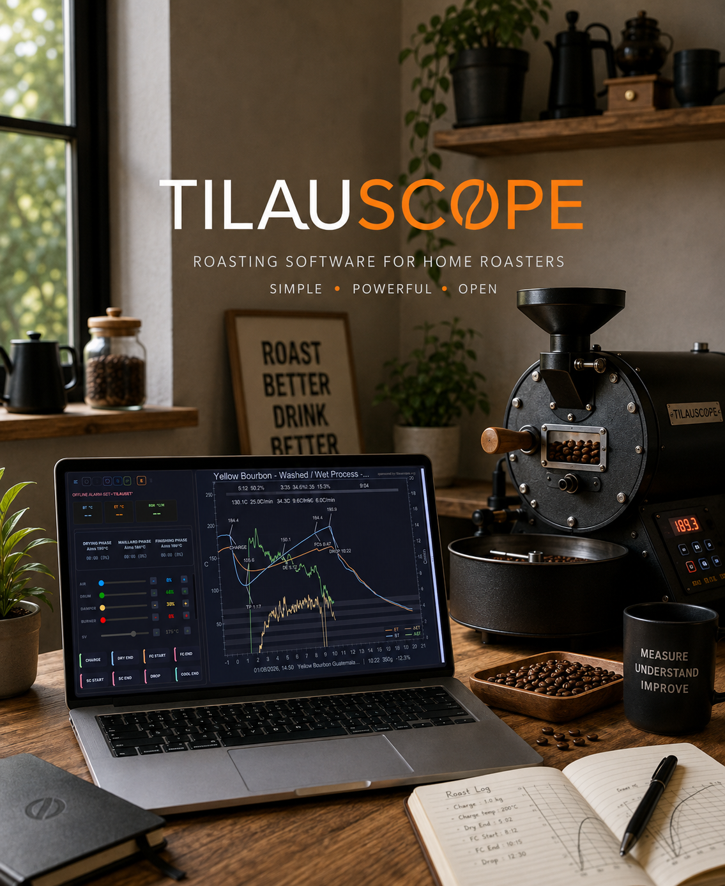

BeanCave
A record per green coffee: stock, provenance, cupping notes, and assisted entry that reads a supplier page for you. Every roast points back to it.
Free software · macOS and Windows
A guided assistant for people roasting 250 g at a time. Before you charge, it builds a plan from the coffee, the batch and your machine. While the drum turns, it says which lever to move and when — and it learns those numbers from your own past roasts of the same bean, not from a reference curve.
Signed and notarised on macOS · installer on Windows · AGPL v3

Artisan Roaster Scope is a professional-grade instrument. It records and plots everything, exposes every setting it has, and leaves every decision to whoever is operating it. That is exactly right for a professional, and it is a great deal to carry on a Saturday morning with a 250 g drum.
TilauScope changes none of that. The curve, the recording, the devices and the alarms are Artisan's, untouched underneath. What TilauScope adds sits above them: a layer that has a view on what should happen next, and says so out loud. You can switch it off — Expert level puts Artisan's full control panel back in front and the extra layer steps back.
Through one roast
The order below is the order it happens in. Each phase is a different question, so the assistant answers a different one at each.
before 00:00
The preparation sheet already knows the coffee, reads your scale, and judges the batch before it starts — too large for the drum, too dense for the heat you have. It brings the machine to charge temperature on its own, using a controller that has learned how your roaster overshoots. The plan exists before the beans do.
04:55 · dry end
Heat reductions are announced before they are due, not reported after. A live reading tells you whether you are ahead of or behind the plan, in seconds rather than in vague terms, and the assistant re-derives the phase you are aiming for from your own previous roasts of this bean at a comparable batch size.
09:26 · first crack
First crack is detected and offered for marking rather than left to your ear alone. A drop countdown accounts for the curve flattening out instead of extrapolating a straight line, and a projected development ratio updates as it goes. If the curve crashes or flicks, you hear about it while there is still time to answer.
11:12 · drop
A summary while it is still fresh, then the record read back against your own history — not against a generic target. Finish the entry later, compare several roasts side by side, correct a milestone you marked a beat late. When the coffee has rested enough to brew, it says so, and hands you a recipe calculated from that roast.
Around the drum
None of the learning above is possible without it. Two roasts of the same bag have to be two roasts of one coffee, not two unrelated files — so the fork carries a database for the green side of the shelf as well as the roasted one.
A record per green coffee: stock, provenance, cupping notes, and assisted entry that reads a supplier page for you. Every roast points back to it.
Bringing in a new bag is a guided step. Water activity is tracked per sack, and the dashboard flags the ones drifting towards trouble before you taste it.
Printed labels for coffees, roasts and sacks, with the physical label pool tracked as reusable. Scanning one opens its record — from a webcam or from your phone.
Pair a phone and drive the roast from beside the machine, with a deadman safeguard that takes over if the connection drops mid-roast.
Talks to
Each device is integrated for what it actually adds, and the documentation states its limits as plainly as its uses. Artisan's own long list of supported meters keeps working underneath.
Free software
Source, releases and issue tracker live in one public repository. Builds for macOS and Windows are produced there and attached to each release.
For anything that is not a bug report — a question about the app, the supported hardware, or the project itself — write to tilauscope@gmail.com.